2 数据预处理
XSeurat2 的数据预处理功能主要包含以下几个方面：
- 读入单个样本数据，创建 Seurat 对象并进行数据预处理 (Run for Each Sample)
- 合并多个样本的 Seurat 对象，并添加元数据 (Combine All Samples and Add Meta-data)
- 对 Seurat 对象或元数据进行操作 (Manipulate Object/Meta-data)
- QC 分析可视化 (Visulization)
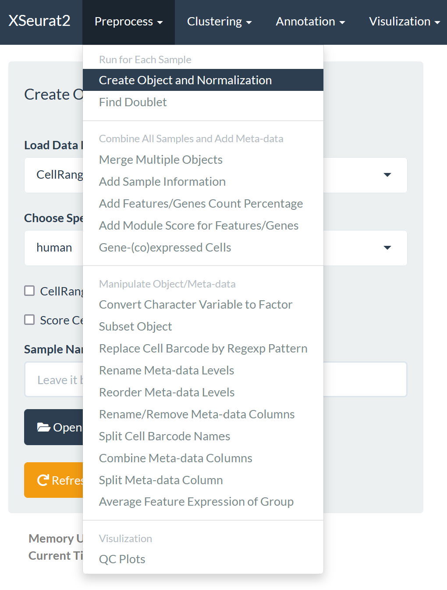
Figure 2.1: 数据预处理(Preprocess)功能菜单
2.1 处理单个样本
2.1.1 创建对象
XSeurat2 主要以 10x Genomics 的 CellRanger 的分析结果作为输入文件，创建 Seurat 对象。
方法1：读入 CellRanger count 结果（单样本）
关于 CellRanger count 结果文件的详细介绍，见 10x Genomics 官方文档。
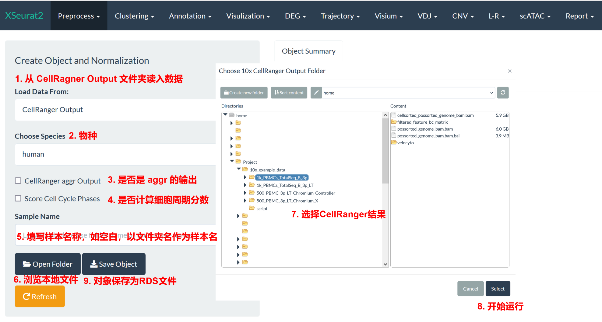
Figure 2.2: 从CellRanger count 的结果中创建对象
方法2：读入 CellRanger aggr 结果（多样本）
关于 CellRanger aggr 结果文件的详细介绍，见 10x Genomics 官方文档。
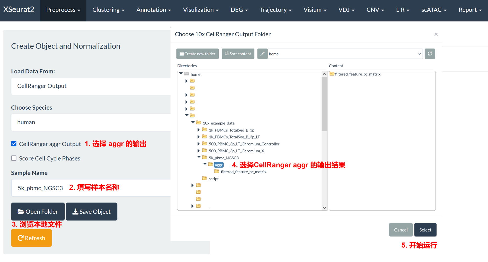
Figure 2.3: 从CellRanger aggr 的结果中创建对象
方法3：读入 CSV/TSV 文本文件
有时从GEO下载的单细胞数据是 CSV 或 TSV 文件，对于这样的文件，也可以用 XSeurat2 导入。
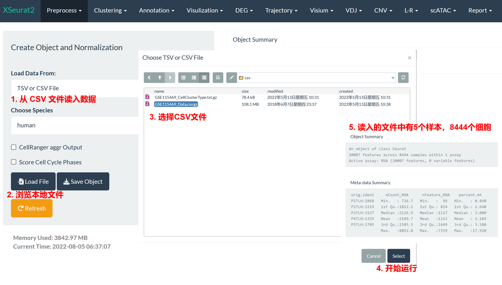
Figure 2.4: 从CSV文件中创建对象
2.1.2 双细胞分析
我们通过使用DoubletFinder软件在 Seurat 对象的元数据中添加一列。其中，双细胞标记为 Doublet，单细胞标记为 Singlet。后续可以根据对象筛选功能，去除所有标记为 Doublet 的细胞。
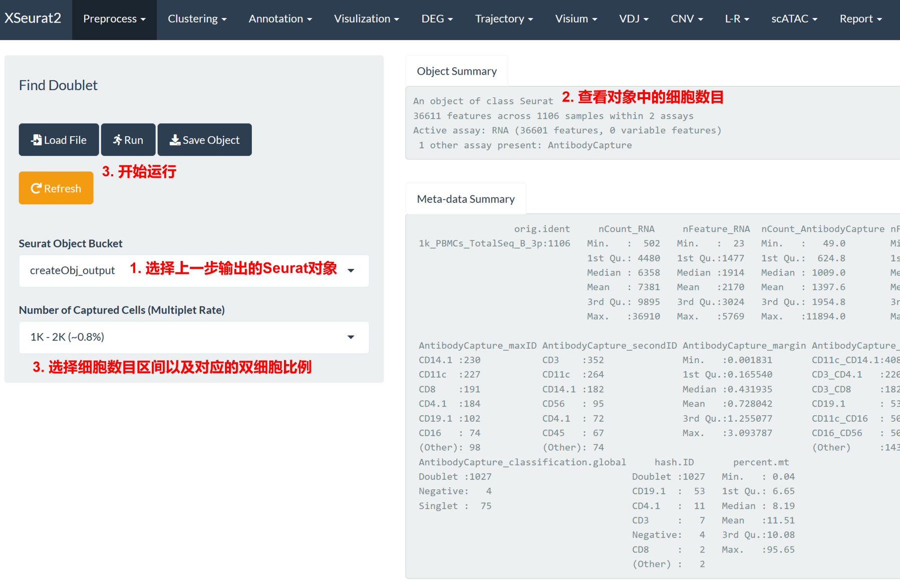
Figure 2.5: 使用 DoubletFinder 标记双细胞
在 Seurat Object Bucket 下拉菜单中选择 FindDoublet 刚刚生成的 Seurat 对象，可以在对象元数据摘要中看到增加了 Is_doublet 这一列，并且可以看到具体的 Doublet 和 Singlet 的数目。
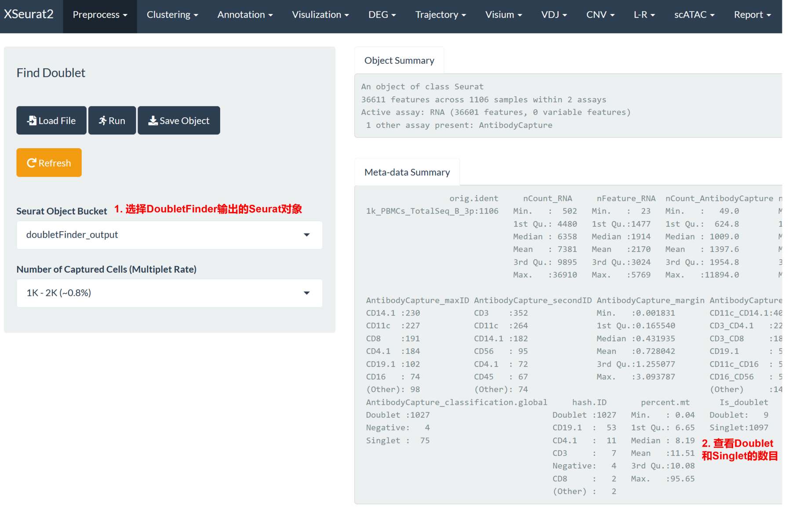
Figure 2.6: 使用 DoubletFinder 标记双细胞
2.2 合并样本/添加元数据
单个样本预处理结束后，我们可以把保存好的所有 Seurat 对象合并成一个大的 Seurat 对象，添加所需要的元数据后，进行后续分析。
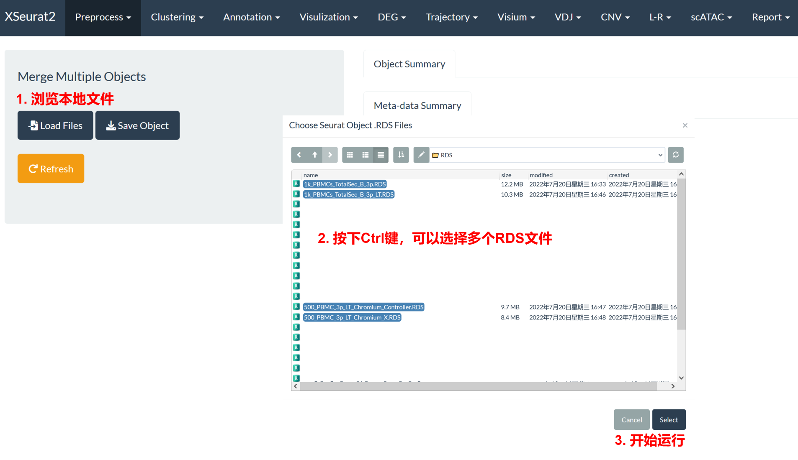
Figure 2.7: 合并多个样本
2.2.1 添加样本信息
我们把关于样本的信息写入到一个 CSV 的文本文件中。有以下几点要求：
- 样本信息表的每一行对应 Seurat 对象中的一个样本
- 样本信息表第一列的列名是 orig.ident
- 从第二列开始，每列表示样本的一个属性，比如批次(batch)、样本组别(group)、性别(sex)等等，列名可以自定义
上传 CSV 文件，将元数据导入 Seurat 对象中。
注意：为了区分用户自定义的样本信息和其他元数据，元数据中的样本信息列名前会自动添加前缀：SampleInfo_
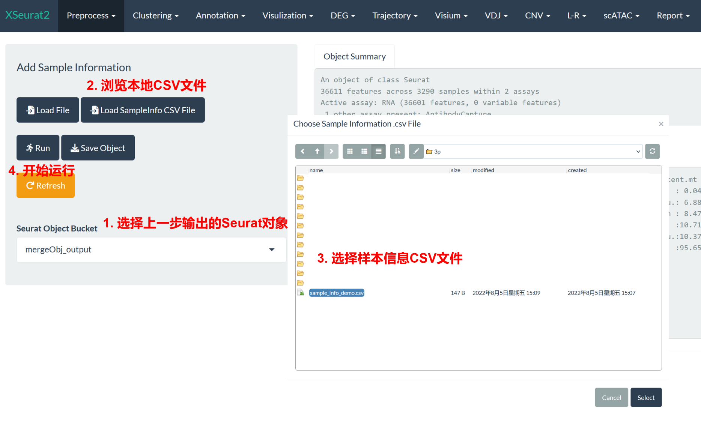
Figure 2.8: 添加样本信息
2.2.2 添加基因集 UMI 百分比
在首次创建 Seurat 对象的时候，程序会自动计算线粒体基因表达量占细胞总 UMI 数的百分比(percent.mt)。除了线粒体基因，用户还可以指定自己感兴趣的基因集，计算这些基因的表达量占细胞总 UMI 数的百分比，并对生成的元数据属性进行命名。
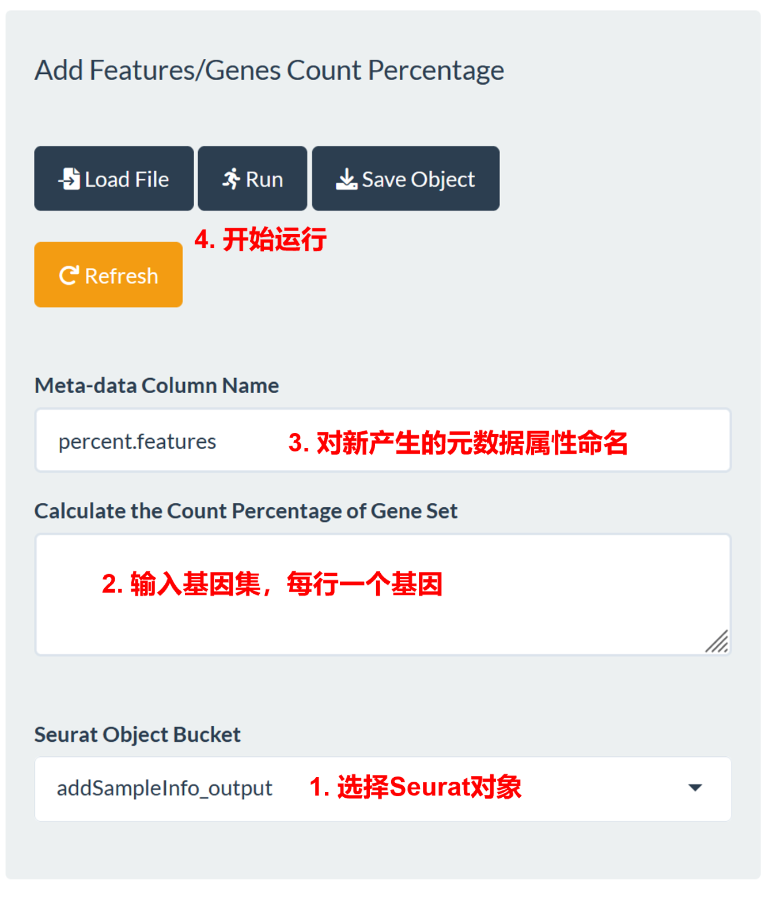
Figure 2.9: 添加基因集 UMI 百分比
2.2.3 添加基因集打分
AddModuleScore() 是 Seurat 中的一个常用函数，它的作用是在单细胞水平对一个基因集的表达量打分(Module Score)。Seurat 对 AddModuleScore() 的描述如下：
Calculate the average expression levels of each program (cluster) on single cell level, subtracted by the aggregated expression of control feature sets. All analyzed features are binned based on averaged expression, and the control features are randomly selected from each bin.
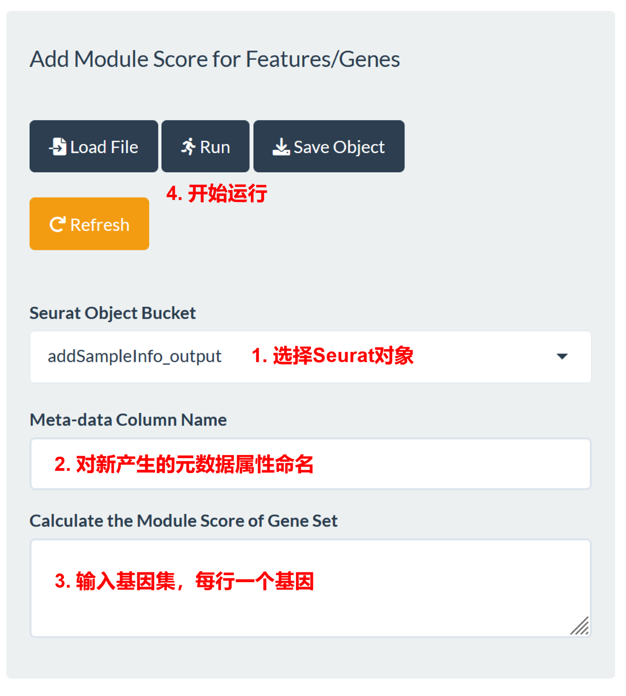
Figure 2.10: 添加基因集打分
2.2.4 标记表达特定基因的细胞
我们有时候要根据某些特定基因的表达来识别和筛选某些细胞，尤其是那些特异性表达的内源或外源基因。用户可以提供基因名和基因表达阈值（高于该阈值认为基因在细胞中表达）。XSeurat2 会在元数据中根据基因的表达量对所有细胞进行标记，用户后续可以根据对象筛选功能，去除所有阳性或阴性的细胞。
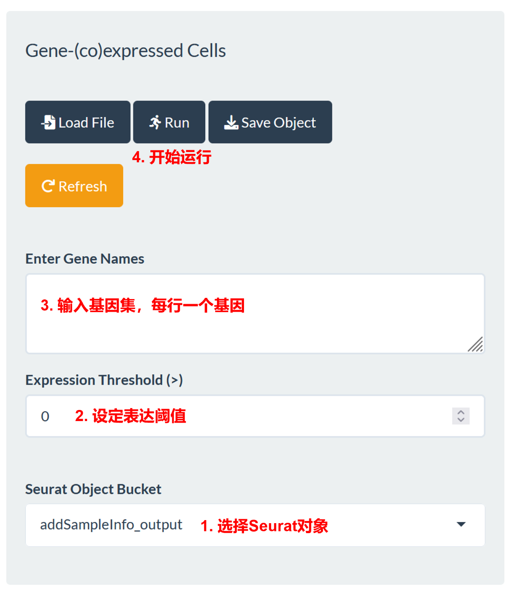
Figure 2.11: 标记表达特定基因的细胞
2.3 操作对象/元数据
2.3.1 字符变量转为因子变量
XSeurat2 在生成 Seurat 对象的时候，会自动将元数据中的字符变量（Character Variable）转变为因子（Factor）。当导入其他程序产生的 Seurat 对象时，为了便于使用 XSeurat2，可以先使用该功能，把元数据的所有字符变量都转变为因子，再继续使用 XSeurat2。
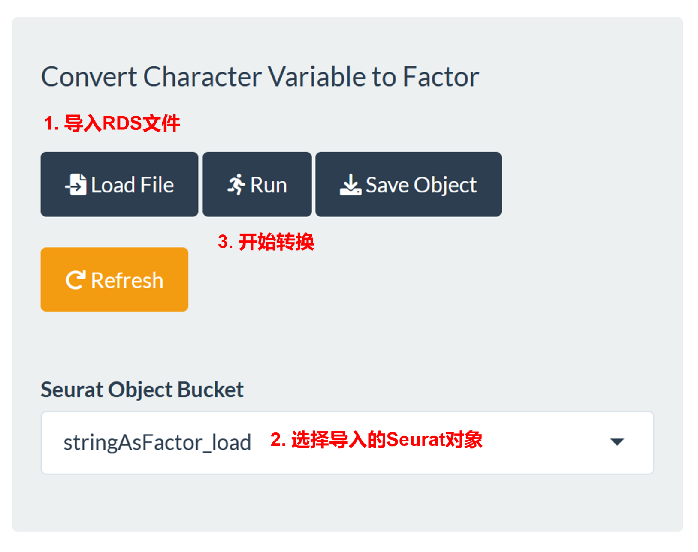
Figure 2.12: 字符变量转为因子变量
2.3.2 筛选对象
对 Seurat 对象的一个最常见操作就是根据一个或多个元数据变量的取值对 Seurat 对象中的细胞进行筛选。比如筛选线粒体含量小于 10% 的细胞、去除标记为双细胞的细胞、或者筛选某种细胞类型的细胞等等。如果要尝试不同的筛选条件，可以将筛选后的细胞保存为 RDS 文件，并用筛选条件对 RDS 文件命名。
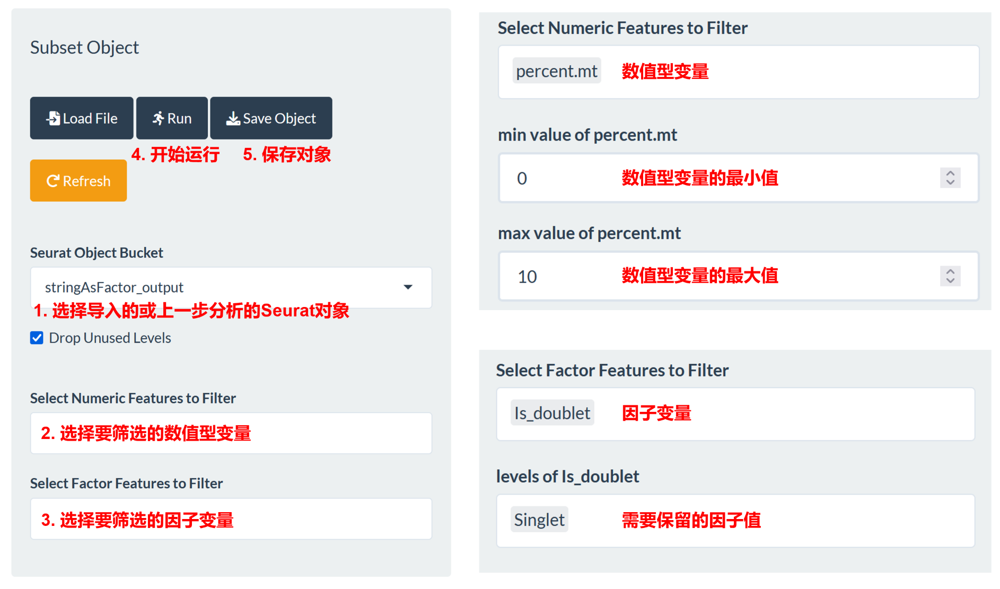
Figure 2.13: 筛选对象
2.3.3 因子变量水平的重命名
元数据因子变量（Factor）会有一个或多个水平（Level），比如细胞类型（cell_type）变量有多个类型名称（T cell，B cell）。有时我们需要对这些因子的水平进行修改，比如：修改字母大小写、合并多个细胞类型（把一种细胞类型改为另一种细胞类型）等等。
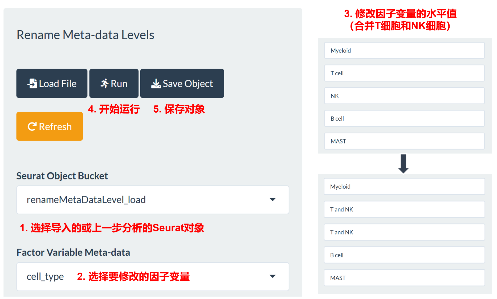
Figure 2.14: 因子变量水平的重命名
2.3.4 因子变量水平的排序
XSeurat2 还可以自定义元数据因子变量水平的排列顺序，这个功能最常见的使用场景是在作图的时候，调整变量水平在图上的排列顺序，比如细胞类型在 UMAP 图或者柱状图上出现的顺序等等。
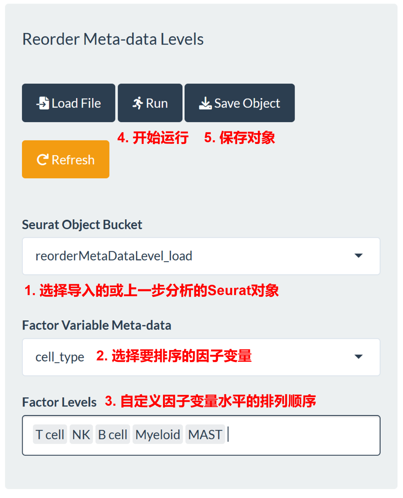
Figure 2.15: 因子变量水平的排序
2.3.5 重命名/删除元数据变量
Seurat 对象中的元数据实际上就是一个数据框（data frame）。它的每一行表示一个细胞，每一列表示细胞的一个属性。我们在做单细胞数据分析的时候，需要熟练的查询、修改、增减元数据。比如，我们可以重命名或者删除某个元数据变量，换句话说，就是修改数据框的列名或者删除数据框的某些列。 在 XSeurat2 中，这些操作可以用无代码的形式完成。
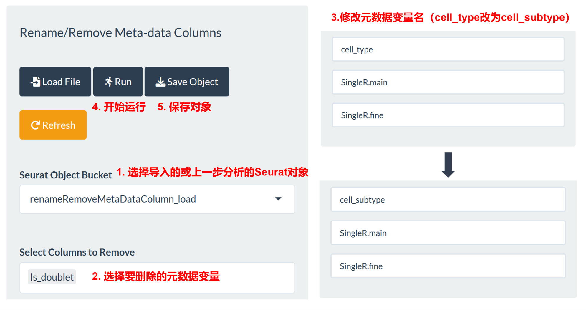
Figure 2.16: 重命名/删除元数据变量
2.3.6 提取细胞条码信息
在某些情况下，细胞条码（Cell Barcode）中可能会包含重要的信息，我们可以使用 XSeurat2 解析细胞条码，选择感兴趣的信息，将其赋给一个变量并添加到元数据中。
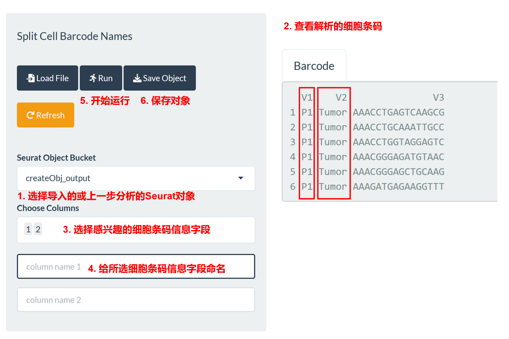
Figure 2.17: 提取细胞条码信息
2.4 QC 分析可视化
QC 分析可视化常用的图有小提琴图（VlnPlot）和散点图（Scatter Plot）。我们可以在图形界面中选择合适的分组变量（Group Variable）和其他作图参数。生成的图可以另存为多种图像文件格式（pdf，png 和 tiff），也可以把生成的图保存到 Seurat 对象中，这样在后续分析过程中可以随时查看。还可以用 Report 功能，将保存在 Seurat 对象中的图以及作图函数展示在最终的报告中。
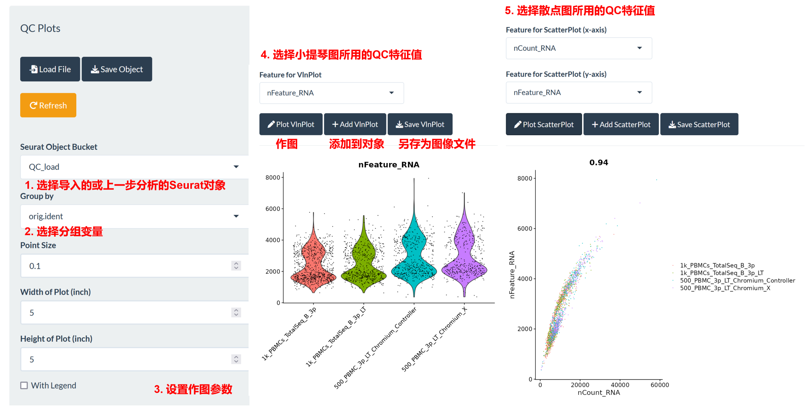
Figure 2.20: QC 分析可视化
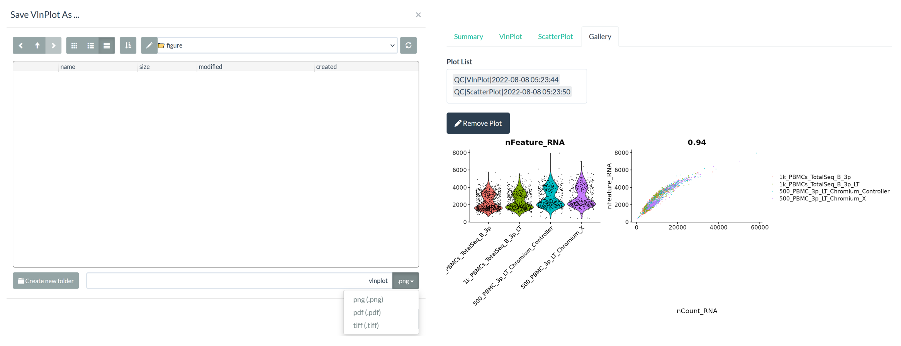
Figure 2.21: 另存为多种图像文件格式（左图）或保存到 Seurat 对象中（右图）